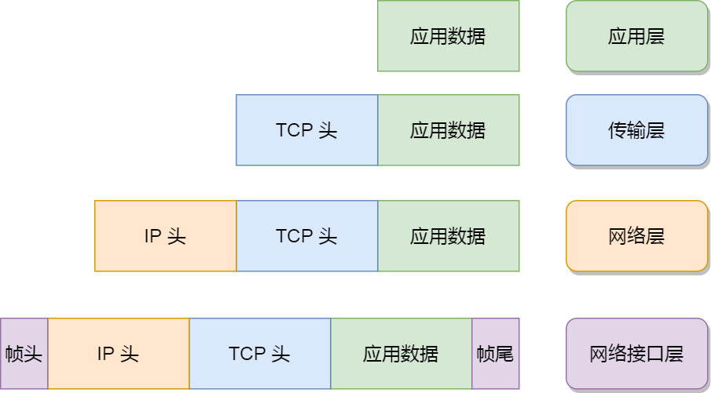

生产者消息发送流程
发送原理
在消息发送的过程中，涉及到两个线程，main线程和sender线程，其中main线程是消息的生产线程，而sender线程是jvm单例的线程，专门用于消息的发送。
在jvm的内存中开辟了一块缓存空间叫RecordAccumulator（消息累加器），用于将多条消息合并成一个批次，然后由sender线程发送给kafka集群。
我们的一条消息在生产过程会调用send方法然后经过拦截器经过序列化器，再经过分区器确定消息发送在具体topic下的哪个分区，然后发送到对应的消息累加器中，消息累加器是多个双端队列。并且每个队列和主题分区都具有一一映射关系。消息在累加器中，进行合并，达到了对应的size（batch.size）或者等待超过对应的等待时间(linger.ms)，都会触发sender线程的发送。sender线程有一个请求池，默认缓存五个请求（ max.in.flight.requests.per.connection ），发送消息后，会等待服务端的ack，如果没收到ack就会重试默认重试int最大值（ retries ）。如果ack成功就会删除累加器中的消息批次，并相应到生产端。

当双端队列中的DQueue满足 batch.size 或者 linger.ms 条件时触发sender线程。

生产者重要参数列表

发送
普通异步发送
1）需求：创建 Kafka 生产者，采用异步的方式发送到 Kafka Broker


2）代码编写
（1）创建工程 kafka
（2）导入依赖
<dependencies>
<dependency>
<groupId>org.apache.kafka</groupId>
<artifactId>kafka-clients</artifactId>
<version>3.0.0</version>
</dependency>
</dependencies>（4）编写不带回调函数的 API 代码
public class CustomProducer {
public static void main(String[] args) {
// 1. 给 kafka 配置对象添加配置信息：bootstrap.servers
Properties properties = new Properties();
//服务信息
properties.put(ProducerConfig.BOOTSTRAP_SERVERS_CONFIG,"47.106.86.64:9092");
//配置序列化
properties.put(ProducerConfig.KEY_SERIALIZER_CLASS_CONFIG, StringSerializer.class.getName());
properties.put(ProducerConfig.VALUE_SERIALIZER_CLASS_CONFIG,StringSerializer.class.getName());
// 2. 创建 kafka 生产者的配置对象
KafkaProducer<String, String> kafkaProducer = new KafkaProducer<String,String>(properties);
// 3. 创建 kafka 生产者对象
for (int i = 0; i < 5; i++) {
kafkaProducer.send(new ProducerRecord("first", "one" + i));
}
kafkaProducer.close();
}
}测试：在Linux上开启Kafka验证
kafka-console-consumer.sh --bootstrap-server 47.106.86.64:9092 --topic first带回调函数的异步发送
回调函数会在 producer 收到 ack 时调用，为异步调用，该方法有两个参数，分别是元数据信息（Record Metadata）和异常信息（Exception），如果 Exception 为 null，说明消息发送成功，如果 Exception 不为 null，说明消息发送失败。

注意：消息发送失败会自动重试，不需要我们在回调函数中手动重试。

public class CustomProducer {
public static void main(String[] args) {
// 1. 给 kafka 配置对象添加配置信息：bootstrap.servers
Properties properties = new Properties();
//服务信息
properties.put(ProducerConfig.BOOTSTRAP_SERVERS_CONFIG,"47.106.86.64:9092");
//配置序列化
properties.put(ProducerConfig.KEY_SERIALIZER_CLASS_CONFIG, StringSerializer.class.getName());
properties.put(ProducerConfig.VALUE_SERIALIZER_CLASS_CONFIG,StringSerializer.class.getName());
// 2. 创建 kafka 生产者的配置对象
KafkaProducer<String, String> kafkaProducer = new KafkaProducer<String,String>(properties);
// 3. 创建 kafka 生产者对象
for (int i = 0; i < 5; i++) {
kafkaProducer.send(new ProducerRecord("first", "one" + i), new Callback() {
@Override
public void onCompletion(RecordMetadata recordMetadata, Exception e) {
if (e == null) {
System.out.println( "分区 ： " + recordMetadata.partition() + " 主题： " + recordMetadata.topic() );
}
}
});
}
kafkaProducer.close();
}
}同步发送API
- 先处理已经堆积在DQueue中的数据。
- RecordAccumulator再处理外部数据。

只需在异步发送的基础上，再调用一下 get()方法即可。

public class CustomProducerSync {
public static void main(String[] args) throws ExecutionException, InterruptedException {
// 1. 给 kafka 配置对象添加配置信息：bootstrap.servers
Properties properties = new Properties();
//服务信息
properties.put(ProducerConfig.BOOTSTRAP_SERVERS_CONFIG,"47.106.86.64:9092");
//配置序列化
properties.put(ProducerConfig.KEY_SERIALIZER_CLASS_CONFIG, StringSerializer.class.getName());
properties.put(ProducerConfig.VALUE_SERIALIZER_CLASS_CONFIG,StringSerializer.class.getName());
// 2. 创建 kafka 生产者的配置对象
KafkaProducer<String, String> kafkaProducer = new KafkaProducer<String,String>(properties);
// 3. 创建 kafka 生产者对象
for (int i = 0; i < 5; i++) {
kafkaProducer.send(new ProducerRecord("first", "one" + i), new Callback() {
@Override
public void onCompletion(RecordMetadata recordMetadata, Exception e) {
if (e == null) {
System.out.println( "分区 ： " + recordMetadata.partition() + " 主题： " + recordMetadata.topic() );
}
}
}).get();
Thread.sleep(100);
}
kafkaProducer.close();
}
}生产者拦截器
生产者拦截器 （ProducerInterceptor）
拦截器接口一共有三个方法。三个方法内的实现如果抛出异常，会被ProducerInterceptors内部捕获，并不会抛到上层。
public interface ProducerInterceptor<K, V> extends Configurable {
ProducerRecord<K, V> onSend(ProducerRecord<K, V> record);
void onAcknowledgement(RecordMetadata metadata, Exception exception);
void close();
}onSend 方法在消息分区之前，可以对消息进行一定的修改，比如给key添加前缀，甚至可以修改我们的topic，如果需要使用kafka实现延时队列高级应用，我们就可以通过拦截器对消息进行判断，并修改，暂时放入我们的延时主题中，等时间达到再放回普通主题队列。
onAcknowledgement该方法是在我们服务端对sender线程进行消息确认，或消息发送失败后的一个回调。优先于我们send方法的callback回调。我们可以对发送情况做一个统计。但是该方法在我们的sender线程也就是唯一的IO线程执行，逻辑越少越好。
close该方法可以在关闭拦截器时，进行一些资源的释放。
（1） 实现自定义拦截器
public MyInterceptor implements ProducerInterceptor {
ProducerRecord<K, V> onSend(ProducerRecord<K, V> record);
void onAcknowledgement(RecordMetadata metadata, Exception exception);
void close();
}（2）将自定义拦截器加入设置中
properties.put(ProducerConfig.INTERCEPTOR_CLASSES_CONFIG,MyInterceptor.getClass.getName());Kafka 拦截器分为生产者拦截器和消费者拦截器。生产者拦截器允许你在发送消息前以及消息提交成功后植入你的拦截器逻辑；而消费者拦截器支持在消费消息前以及提交位移后编写特定逻辑。值得一提的是，这两种拦截器都支持链的方式，即你可以将一组拦截器串连成一个大的拦截器，Kafka 会按照添加顺序依次执行拦截器逻辑。
当前 Kafka 拦截器的设置方法是通过参数配置完成的。生产者和消费者两端有一个相同的参数，名字叫 interceptor. Classes
Properties props = new Properties();
List<String> interceptors = new ArrayList<>();
interceptors.add("com.yourcompany.kafkaproject.interceptors.AddTimestampInterceptor"); // 拦截器1
interceptors.add("com.yourcompany.kafkaproject.interceptors.UpdateCounterInterceptor"); // 拦截器2
props.put(ProducerConfig.INTERCEPTOR_CLASSES_CONFIG, interceptors);
……暂时无法在飞书文档外展示此内容
我们应该怎么编写 AddTimeStampInterceptor 和 UpdateCounterInterceptor 类呢？其实很简单，这两个类以及你自己编写的所有 Producer 端拦截器实现类都要继承 org. Apache. Kafka. Clients. Producer. ProducerInterceptor 接口。
-
OnSend：该方法会在消息发送之前被调用。如果你想在发送之前对消息“美美容”，这个方法是你唯一的机会。
-
OnAcknowledgement：该方法会在消息成功提交或发送失败之后被调用。还记得我在上一期中提到的发送回调通知 callback 吗？onAcknowledgement 的调用要早于 callback 的调用。值得注意的是，**这个方法和 onSend 不是在同一个线程中被调用的，因此如果你在这两个方法中调用了某个共享可变对象，一定要保证线程安全哦。**还有一点很重要，这个方法处在 Producer 发送的主路径中，所以最好别放一些太重的逻辑进去，否则你会发现你的 Producer TPS 直线下降
具体来说就是用 CPU 时间去换磁盘空间或网络 I/O 传输量，希望以较小的 CPU 开销带来更少的磁盘占用或更少的网络 I/O 传输。
生产者分区
切记分区是实现负载均衡以及高吞吐量的关键
为什么分区
Kafka 有主题（Topic）的概念，它是承载真实数据的逻辑容器，而在主题之下还分为若干个分区，也就是说 Kafka 的消息组织方式实际上是三级结构：**主题 - 分区 - 消息。**主题下的每条消息只会保存在某一个分区中，而不会在多个分区中被保存多份

为啥要使用多个分区而不是直接使用多个主题？
-
其实分区的作用就是提供负载均衡的能力
-
为了实现系统的高伸缩性（Scalability）。不同的分区能够被放置到不同节点的机器上，而数据的读写操作也都是针对分区这个粒度而进行的，这样每个节点的机器都能独立地执行各自分区的读写请求处理。并且，我们还可以通过添加新的节点机器来增加整体系统的吞吐量。
都有哪些分区策略
所谓分区策略是决定生产者将消息发送到哪个分区的算法。
自定义分区策略
在编写生产者程序时，你可以编写一个具体的类实现 org. Apache. Kafka. Clients. Producer. Partitioner 接口。这个接口也很简单，只定义了两个方法：partition ()和 close ()，通常你只需要实现最重要的 partition 方法。我们来看看这个方法的方法签名：
int partition(String topic, Object key, byte[] keyBytes, Object value, byte[] valueBytes, Cluster cluster);Topic、key、keyBytes、value 和 valueBytes 都属于消息数据，cluster 则是集群信息（比如当前 Kafka 集群共有多少主题、多少 Broker 等）。
要你自己的实现类定义好了 partition 方法，同时设置 partitioner. Class 参数为你自己实现类的 Full Qualified Name，
轮训策略（默认的策略）
也称 Round-robin 策略，即顺序分配。比如一个主题下有 3 个分区，那么第一条消息被发送到分区 0，第二条被发送到分区 1，第三条被发送到分区 2，以此类推。当生产第 4 条消息时又会重新开始，即将其分配到分区 0，

轮询策略有非常优秀的负载均衡表现，它总是能保证消息最大限度地被平均分配到所有分区上，故默认情况下它是最合理的分区策略，也是我们最常用的分区策略之一。
随机策略
也称 Randomness 策略。所谓随机就是我们随意地将消息放置到任意一个分区上，如下面这张图所示。

随机策略也是力求将数据均匀地打散到各个分区，但从实际表现来看，它要逊于轮询策略，所以如果追求数据的均匀分布，还是使用轮询策略比较好。事实上，随机策略是老版本生产者使用的分区策略，在新版本中已经改为轮询了。
List<PartitionInfo> partitions = cluster.partitionsForTopic(topic);
return ThreadLocalRandom.current().nextInt(partitions.size());按消息键保序策略
Kafka 允许为每条消息定义消息键，简称为 Key。这个 Key 的作用非常大，它可以是一个有着明确业务含义的字符串，比如客户代码、部门编号或是业务 ID 等
一旦消息被定义了 Key，那么你就可以保证同一个 Key 的所有消息都进入到相同的分区里面，由于每个分区下的消息处理都是有顺序的，故这个策略被称为按消息键保序策略，

List<PartitionInfo> partitions = cluster.partitionsForTopic(topic);
return Math.abs(key.hashCode()) % partitions.size();如何实现消息的顺序问题。
-
给 Kafka 主题设置单分区，也就是 1 个分区。这样所有的消息都只在这一个分区内读写，因此保证了全局的顺序性。这样做虽然实现了因果关系的顺序性，但也丧失了 Kafka 多分区带来的高吞吐量和负载均衡的优势。
-
标志位设定专门的分区策略，保证同一标志位的所有消息都发送到同一分区，这样既可以保证分区内的消息顺序，也可以享受到多分区带来的性能红利。
其他分区策略
- 基于地理位置的分区策略
分区的好处
从存储的角度 → 合理使用存储资源，实现负载均衡
从计算的角度 → 提高并行计算的可行性

生产者发送消息分区策略
1）默认的分区器 DefaultPartitioner
在 IDEA 中 ctrl +n，全局查找 DefaultPartitioner。

Kafka支持三种分区策略 1) 指定分区； 2）指定key，计算hash得分区； 3）指定随机粘性分区；

自定义分区器
如果研发人员可以根据企业需求，自己重新实现分区器。
1）需求
例如我们实现一个分区器实现，发送过来的数据中如果包含 Hi，就发往 0 号分区，不包含 Hi，就发往 1 号分区。
2）实现步骤
（1）定义类实现 Partitioner 接口。
（2）重写 partition()方法。
public class MyPartitioner implements Partitioner {
/**
* @param topic 主题
* @param key 消息的 key
* @param keyBytes 消息的 key 序列化后的字节数组
* @param value 消息的 value
* @param valueBytes 消息的 value 序列化后的字节数组
* @param cluster 集群元数据可以查看分区信息
*/
@Override
public int partition(String topic, Object key, byte[] keyBytes, Object value, byte[] valueBytes, Cluster cluster) {
String string = value.toString();
if (string.contains("vi")){
return 2;
}else{
return 1;
}
}
}（3）使用分区器的方法，在生产者的配置中添加分区器参数。
//自定义分区规则
properties.put(ProducerConfig.PARTITIONER_CLASS_CONFIG,MyPartitioner.class.getName());（4）开启测试
生产者提高吞吐量
通过提高吞吐量达到低延迟的效果

Batch.size 与 linger.ms 配合使用，根据生成数据的大小指定。
RecordAccumlator：在异步发送并且分区很多的情况下，32M的数据量容易被满足，进程交互加大，可以适当提高到64M。
// batch.size：批次大小，默认 16K
properties.put(ProducerConfig.BATCH_SIZE_CONFIG, 16384);
// linger.ms：等待时间，默认 0
properties.put(ProducerConfig.LINGER_MS_CONFIG, 1);
// RecordAccumulator：缓冲区大小，默认 32M：buffer.memory
properties.put(ProducerConfig.BUFFER_MEMORY_CONFIG,33554432);
// compression.type：压缩，默认 none，可配置值 gzip、snappy、lz4 和 zstd
properties.put(ProducerConfig.COMPRESSION_TYPE_CONFIG, "snappy");消息累加器
消息累加器（RecordAccumulator）

为了提高生产者的吞吐量，我们通过累加器将多条消息合并成一批统一发送。在broker中将消息批量存入。减少多次的网络IO。
消息累加器默认32m，如果生产者的发送速率大于sender发送的速率，消息就会堆满累加器。生产者就会阻塞，或者报错，报错取决于阻塞时间的配置。
累加器的存储形式为ConcurrentMap<TopicPartition, Deque<ProducerBatch>>，可以看出来就是一个分区对应一个双端队列，队列中存储的是ProducerBatch一般大小是16k根据batch.size配置，新的消息会append到ProducerBatch中，满16k就会创建新的ProducerBatch，并且触发sender线程进行发送。
如果消息量非常大，生成了大量的ProducerBatch，在发送后，又需要JVM通过GC回收这些ProducerBatch就变得非常影响性能，所以kafka通过 BufferPool作为内存池来管理ProducerBatch的创建和回收，需要申请一个新的ProducerBatch空间时，调用 free.allocate(size, maxTimeToBlock)找内存池申请空间。
如果单条消息大于16k，那么就不会复用内存池了，会生成一个更大的ProducerBatch专门存放大消息，发送完后GC回收该内存空间。
为了进一步减小网络中消息传输的带宽。我们也可以通过**消息压缩**的方式，在生产端将消息追加进`ProducerBatch`就对每一条消息进行压缩了。常用的有Gzip、Snappy、Lz4 和 Zstd，这是时间换空间的手段。压缩的消息会在消费端进行解压。
消息发送线程（Sender）
消息保存在内存后，Sender线程就会把符合条件的消息按照批次进行发送。除了发送消息，元数据的加载也是通过Sender线程来处理的。
Sender线程发送消息以及接收消息，都是基于java NIO的Selector。通过Selector把消息发出去，并通过Selector接收消息。
Sender线程默认容纳5个未确认的消息，消息发送失败后会进行重试。
生产经验—数据可靠性
消息确认机制-ACK
producer提供了三种消息确认的模式，通过配置acks来实现
acks为0时， 表示生产者将数据发送出去就不管了，不等待任何返回。这种情况下数据传输效率最高，但是数据可靠性最低，当 server挂掉的时候就会丢数据；
acks为1时（默认），表示数据发送到Kafka后，经过leader成功接收消息的的确认，才算发送成功，如果leader宕机了，就会丢失数据。
acks为-1/all时，表示生产者需要等待ISR中的所有follower都确认接收到数据后才算发送完成，这样数据不会丢失，因此可靠性最高，性能最低。
- 数据完全可靠条件 = ACK级别设置为-1 + 分区副本大于等于2 + ISR里应答的最小副本数量大于等于2

AR = ISR + ORS
正常情况下，如果所有的follower副本都应该与leader副本保持一定程度的同步，则AR = ISR，OSR = null。
ISR 表示在指定时间内和leader保存数据同步的集合；
ORS表示不能在指定的时间内和leader保持数据同步集合，称为OSR(Out-Sync Relipca set)。
// Ack 设置
properties.put(ProducerConfig.ACKS_CONFIG,"1");
// 重试次数, 默认的重试次数是 Max.Integer
properties.put(ProducerConfig.RETRIES_CONFIG,3);数据去重-幂等性
1）幂等性原理
在一般的MQ模型中，常有以下的消息通信概念
- 至少一次（At Least Once）： ACK级别设置为-1 + 分区副本大于等于2 + ISR里应答的最小副本数量>=2。可以保证数据不丢失，但是不能保证数据不重复。
- 最多一次（At Most Once）：ACK级别设置为0 。可以保证数据不重复，但是不能保证数据不丢失。•
- 精确一次（Exactly Once）：至少一次 + 幂等性 。 Kafka 0.11版本引入一项重大特性：幂等性和事务。
幂等性，简单地说就是对接口的多次调用所产生的结果和调用一次是一致的。生产者在进行重试的时候有可能会重复写入消息，而使用Kafka 的幂等性功能之后就可以避免这种情况。（不产生重复数据）
重复数据的判断标准：具有<PID, Partition, SeqNumber>相同主键的消息提交时，Broker只会持久化一条。其
中ProducerId（pid）是Kafka每次重启都会分配一个新的；Partition 表示分区号；Sequence Number 序列化号，是单调自增的。
broker中会在内存维护一个pid+分区对应的序列号。如果收到的序列号正好比内存序列号大一，才存储消息，如果小于内存序列号，意味着消息重复，那么会丢弃消息，并应答。如果远大于内存序列号，意味着消息丢失，会抛出异常。
所以幂等解决的是sender到broker间，由于网络波动可能造成的重发问题。用幂等来标识唯一消息。
并且幂等性只能保证的是在单分区单会话内不重复。
2）如何使用幂等性
开启幂等性功能的方式很简单，只需要显式地将生产者客户端参数enable.idempotence设置为true即可(这个参数的默认值为true)，并且还需要确保生产者客户端的retries、acks、max.in.filght.request.per.connection参数不被配置错，默认值就是对的。
消息事务

由于幂等性不能跨分区运作，为了保证同时发的多条消息，要么全成功，要么全失败。kafka引入了事务的概念。
开启事务需要producer设置transactional.id的值并同时开启幂等性。
通过事务协调器，来实现事务，工作流程如下：
// 1 初始化事务
void initTransactions();
// 2 开启事务
void beginTransaction() throws ProducerFencedException;
// 3 在事务内提交已经消费的偏移量（主要用于消费者）
void sendOffsetsToTransaction(Map<TopicPartition, OffsetAndMetadata> offsets,
String consumerGroupId) throws
ProducerFencedException;
// 4 提交事务
void commitTransaction() throws ProducerFencedException;
// 5 放弃事务（类似于回滚事务的操作）
void abortTransaction() throws ProducerFencedException;
客户端-无消息丢失如何配置
一句话概括，Kafka 只对**“已提交”的消息（committed message）做有限度的持久化保证。**
-
生产者
- 要使用 producer. Send (msg)，而要使用 producer. Send (msg, callback)。记住，一定要使用带有回调通知的 send 方法。
-
Broker
-
设置 acks = all。Acks 是 Producer 的一个参数，代表了你对“已提交”消息的定义。**如果设置成 all，则表明所有副本 Broker 都要接收到消息，该消息才算是“已提交”。**这是最高等级的“已提交”定义
-
设置 retries 为一个较大的值。这里的 retries 同样是 Producer 的参数，对应前面提到的 Producer 自动重试。当出现网络的瞬时抖动时，消息发送可能会失败，此时配置了 retries > 0 的 Producer 能够自动重试消息发送，避免消息丢失。
-
设置 unclean. Leader. Election. Enable = false。这是 Broker 端的参数，它控制的是哪些 Broker 有资格竞选分区的 Leader。如**果一个 Broker 落后原先的 Leader 太多，那么它一旦成为新的 Leader，必然会造成消息的丢失。**故一般都要将该参数设置成 false，即不允许这种情况的发生。
-
设置 replication. Factor >= 3。这也是 Broker 端的参数。其实这里想表述的是，最好将消息多保存几份，毕竟目前防止消息丢失的主要机制就是冗余。
-
设置 min. Insync. Replicas > 1。这依然是 Broker 端参数，**控制的是消息至少要被写入到多少个副本才算是“已提交”。**设置成大于 1 可以提升消息持久性。在实际环境中千万不要使用默认值 1。
-
确保 replication. Factor > min. Insync. Replicas。**如果两者相等，那么只要有一个副本挂机，整个分区就无法正常工作了。**我们不仅要改善消息的持久性，防止数据丢失，还要在不降低可用性的基础上完成。推荐设置成 replication. Factor = min. Insync. Replicas + 1。
-
-
消费者
- 确保消息消费完成再提交。Consumer 端有个参数 enable. Auto. Commit，最好把它设置成 false，并采用手动提交位移的方式。就像前面说的，这对于单 Consumer 多线程处理的场景而言是至关重要的。
其基本思想就是允许应用程序在不修改逻辑的情况下，动态地实现一组可插拔的事件处理逻辑链。它能够在主业务操作的前后多个时间点上插入对应的“拦截”逻辑。Springmvcde 拦截器的工作原理

Kafka 拦截器借鉴了这样的设计思路。你可以在消息处理的前后多个时点动态植入不同的处理逻辑，比如在消息发送前或者在消息被消费后。
消息顺序
消息在单分区内有序，多分区内无序（如果对多分区进行排序，造成分区无法工作需要等待排序，浪费性能）

kafka只能保证单分区下的消息顺序性，为了保证消息的顺序性，需要做到如下几点。
如果未开启幂等性，需要 max.in.flight.requests.per.connection 设置为1。（缓冲队列最多放置1个请求）
如果开启幂等性，需要 max.in.flight.requests.per.connection 设置为小于5。
这是因为broker端会缓存producer主题分区下的五个request，保证最近5个request是有序的。

如果Request3在失败重试后才发往到集群中，必然会导致乱序，但是集群会重新按照序列号进行排序（最对一次排序5个）。
客户端-生产者压缩算法
怎么压缩
Kafka 的消息层次都分为两层：
-
消息集合（message set）
-
消息（message）。一个消息集合中包含若干条日志项（record item）, 而日志项才是真正封装消息的地方
目前 Kafka 共有两大类消息格式，社区分别称之为 V 1 版本和 V 2 版本。
引入 V 2 版本的目的
主要是针对 V 1 版本的一些弊端做了修正，
-
CRC 校验
-
在 V 1 版本中，每条消息都需要执行 CRC 校验，但有些情况下消息的 CRC 值是会发生变化的。比如在 Broker 端可能会对消息时间戳字段进行更新，那么重新计算之后的 CRC 值也会相应更新。
-
在 V 2 版本中，消息的 CRC 校验工作就被移到了消息集合这一层
-
-
压缩方式
-
V 1 版本中保存压缩消息的方法是把多条消息进行压缩然后保存到外层消息的消息体字段中
-
V 2 版本的做法是对整个消息集合进行压缩
-
何时压缩
压缩可能发生在两个地方：生产者端和 Broker 端。
生产者程序中配置 compression. Type 参数即表示启用指定类型的压缩算法
Properties props = new Properties();
props.put("bootstrap.servers", "localhost:9092");
props.put("acks", "all");
props.put("key.serializer", "org.apache.kafka.common.serialization.StringSerializer");
props.put("value.serializer", "org.apache.kafka.common.serialization.StringSerializer");
// 开启GZIP压缩
props.put("compression.type", "gzip");
Producer<String, String> producer = new KafkaProducer<>(props);大部分情况下 Broker 从 Producer 端接收到消息后仅仅是原封不动地保存而不会对其进行任何修改
有时 Broker 端需要重新压缩
-
Broker 端指定了和 Producer 端不同的压缩算法。
-
Broker 端发生了消息格式转换。
何时解压缩
通常来说解压缩发生在消费者程序中，也就是说 Producer 发送压缩消息到 Broker 后，Broker 照单全收并原样保存起来。当 Consumer 程序请求这部分消息时，Broker 依然原样发送出去，当消息到达 Consumer 端后，由 Consumer 自行解压缩还原成之前的消息。
通常
Producer 端压缩、Broker 端保持、Consumer 端解压缩。